Make predictions from a model fitted with sdmTMB(), either for the fitted
data or for new data (e.g., a prediction grid). At new locations, the random
fields are interpolated from their estimated values at the mesh vertices.
Besides the overall prediction (est), the output separates the linear
predictor into the contribution of the spatial and spatiotemporal random
fields and everything else (see Value).
Usage
# S3 method for class 'sdmTMB'
predict(
object,
newdata = NULL,
type = c("link", "response"),
se_fit = FALSE,
re_form = NULL,
re_form_iid = NULL,
allow_new_levels = NULL,
nsim = 0,
sims_var = "est",
sample_fe = TRUE,
model = c(NA, 1, 2),
offset = NULL,
mcmc_samples = NULL,
nonlocal_newdata = NULL,
return_tmb_object = deprecated(),
return_tmb_report = FALSE,
return_tmb_data = FALSE,
...
)Arguments
- object
A model fitted with
sdmTMB().- newdata
A data frame to predict on. If
NULL(default), predictions are for the fitted data. Must contain the columns used in the model formulas (includingspatial_varyingandtime_varying), the coordinate columns used to buildmesh, and, for spatiotemporal models, thetimecolumn. Time values must be among those in the fitted data orextra_time. Factor levels must have been seen in fitting, except for random effect grouping factors (seeallow_new_levels).- type
The scale of
est:"link"(default; the linear predictor) or"response"(the expected value of the response). For delta models,"response"gives the expected value combining both components. Onlyest,est1, andest2depend ontype; the other columns are always on the link scale. Standard errors (se_fit) require"link".- se_fit
Logical: calculate standard errors of
eston the link scale (returned asest_se)? These account for uncertainty in both fixed and random effects but can be slow for many rows when random fields are included. For faster uncertainty, exclude the random fields withre_form = NAor summarize draws fromnsim. Usensimfor response-scale uncertainty.- re_form
Include the spatial and spatiotemporal random fields (including spatially varying coefficient fields)?
NULL(default) includes them.NAor~ 0excludes them for population-level predictions, so thatestequalsest_non_rf; the random field columns are then omitted. Often used withse_fit = TRUEto plot covariate effects. IID random effects are set separately withre_form_iid. Both also apply to derived quantities such asget_index()when passed through itspredict_args.- re_form_iid
Include the IID random intercepts and slopes (e.g.,
(1 | g)informula)?NULL(default) includes them.NAor~ 0sets them all to zero. Excluding only some of them is not yet supported.- allow_new_levels
Allow levels of random effect grouping factors in
newdatathat were not seen in fitting? Rows with a new level get a random effect value of zero (a population-level prediction).TRUEallows them silently,FALSEgives an error (as withallow.new.levelsin lme4 and glmmTMB), andNULL(default) allows them with a warning. Not relevant ifre_form_iidexcludes the random effects. Grouping columns innewdatamust be factors.- nsim
Number of draws. If
> 0, returns a matrix of draws instead of a data frame (see Value). Each draw takes the fixed and random effects from their approximate joint (multivariate normal) distribution and computesest(orsims_var). Summarize across draws (e.g.,apply(x, 1, sd)or quantiles) for uncertainty on any scale, or carry the draws through to derived quantities. Usually much faster thanse_fit = TRUEfor models with random fields.- sims_var
Which quantity to return when
nsim > 0:"est"(default; on the scale set bytype) or one of the link-scale columns"est_non_rf","est_rf","omega_s","zeta_s", or"epsilon_st"(see Value). The model must include the term. For delta models, these come from the component set bymodel(default: the first). With more than one spatially varying coefficient,"zeta_s"returns a list of matrices, one per coefficient. For other quantities, usereturn_tmb_report = TRUE.- sample_fe
Logical. When
nsim > 0, draw the fixed effects and other estimated parameters along with the random effects (TRUE, default)? IfFALSE, these are held at their estimates and only the random effects (random fields, IID random effects, time-varying coefficients, and smoother coefficients) are drawn, conditional on those estimates. This ignores parameter uncertainty and so typically gives narrower intervals. Fixed effects are held at their estimates even with REML. See also the same argument inproject().- model
For delta models, what
est(andest_seor the draws fromnsimormcmc_samples) refers to:NA(default) combines both components,1gives the first (binary) component, and2the second (positive) component. The data frame output always also includes each component asest1andest2. Ignored for other models. See the delta-model vignette.- offset
A numeric vector of offset values, one per row of
newdata(not a column name). IfNULL(default), predictions for the fitted data use the fitted offset, and predictions withnewdatause an offset of 0, i.e., predictions per unit of the offset (e.g., density rather than catch when the offset is log area swept).- mcmc_samples
A matrix of posterior samples from a model passed to tmbstan (see
bayesianinsdmTMB()), as returned bysdmTMBextra::extract_mcmc()in the sdmTMBextra package. If supplied, returns a matrix of posterior draws in the same form as withnsim. Ifnsimis also supplied, the lastnsimsamples are used. See the Bayesian vignette.- nonlocal_newdata
An optional data frame of the
nonlocal_formulacovariates to predict with instead of those used in fitting (e.g., for a scenario with different conditions). Same requirements asnonlocal_datainsdmTMB(). The rows ofnewdata(or the fitted data) still set where and when predictions are made; this argument only supplies the covariate values that are diffused or lagged. IfNULL(default), the covariates fromnonlocal_datainsdmTMB()are reused if supplied (sonewdataneed not contain those columns); otherwise they come fromnewdata.- return_tmb_object
Logical. If
TRUE, include the TMB object in a list-format output. Instead, pass the fitted model andnewdatadirectly toget_index()orget_cog().- return_tmb_report
Logical: return the TMB report (a list of all reported quantities at the estimated parameters) instead of a data frame? With
nsim > 0ormcmc_samples, a list with one report per draw. Mainly for developers.- return_tmb_data
Logical: return the data list passed to TMB instead of predicting? Used internally.
- ...
Unused.
Value
By default, newdata (or the fitted data) with these columns added:
est: The prediction on the scale set bytype.est_se: The standard error ofeston the link scale, ifse_fit = TRUE.est_non_rf: The linear predictor excluding the spatial and spatiotemporal random fields: fixed effects, smoothers, IID random effects, time-varying coefficients, and the offset.est_rf: The sum of all random field terms, including spatially varying coefficient fields multiplied by their covariates. On the link scale,est_non_rf + est_rfequalsest.omega_s: The spatial random field.zeta_s_<x>: The spatially varying coefficient field for covariate<x>inspatial_varying: the local deviation from the average coefficient, not multiplied by the covariate.epsilon_st: The spatiotemporal random field.nl_*: The transformed covariate values for eachnonlocal_formulaterm.
Columns for terms not in the model are left out, as are the random field
columns with re_form = NA.
Delta models instead return each column (other than est and est_se)
per component, with suffixes 1 and 2 for the first and second
components (e.g., est1, est2, omega_s1, omega_s2). The identity
above then holds within each component, and est combines the components
(or gives one of them; see model).
If nsim > 0 or mcmc_samples is supplied: a matrix with one row per row
of newdata (or the fitted data) and one column per draw. Row names are
the time values.
If return_tmb_object = TRUE (deprecated): a list with elements data
(the data frame above), report (the TMB report), obj (the TMB object
from the prediction), and fit_obj (the fitted model).
Examples
d <- pcod_2011
mesh <- make_mesh(d, c("X", "Y"), cutoff = 30) # a coarse mesh for example speed
m <- sdmTMB(
data = d, formula = density ~ 0 + as.factor(year) + depth_scaled + depth_scaled2,
time = "year", mesh = mesh, family = tweedie(link = "log")
)
# Predictions at original data locations -------------------------------
predictions <- predict(m)
head(predictions)
#> # A tibble: 6 × 17
#> year X Y depth density present lat lon depth_mean depth_sd
#> <int> <dbl> <dbl> <dbl> <dbl> <dbl> <dbl> <dbl> <dbl> <dbl>
#> 1 2011 435. 5718. 241 245. 1 51.6 -130. 5.16 0.445
#> 2 2011 487. 5719. 52 0 0 51.6 -129. 5.16 0.445
#> 3 2011 490. 5717. 47 0 0 51.6 -129. 5.16 0.445
#> 4 2011 545. 5717. 157 0 0 51.6 -128. 5.16 0.445
#> 5 2011 404. 5720. 398 0 0 51.6 -130. 5.16 0.445
#> 6 2011 420. 5721. 486 0 0 51.6 -130. 5.16 0.445
#> # ℹ 7 more variables: depth_scaled <dbl>, depth_scaled2 <dbl>, est <dbl>,
#> # est_non_rf <dbl>, est_rf <dbl>, omega_s <dbl>, epsilon_st <dbl>
predictions$resids <- residuals(m) # randomized quantile residuals
library(ggplot2)
ggplot(predictions, aes(X, Y, col = resids)) + scale_colour_gradient2() +
geom_point() + facet_wrap(~year)
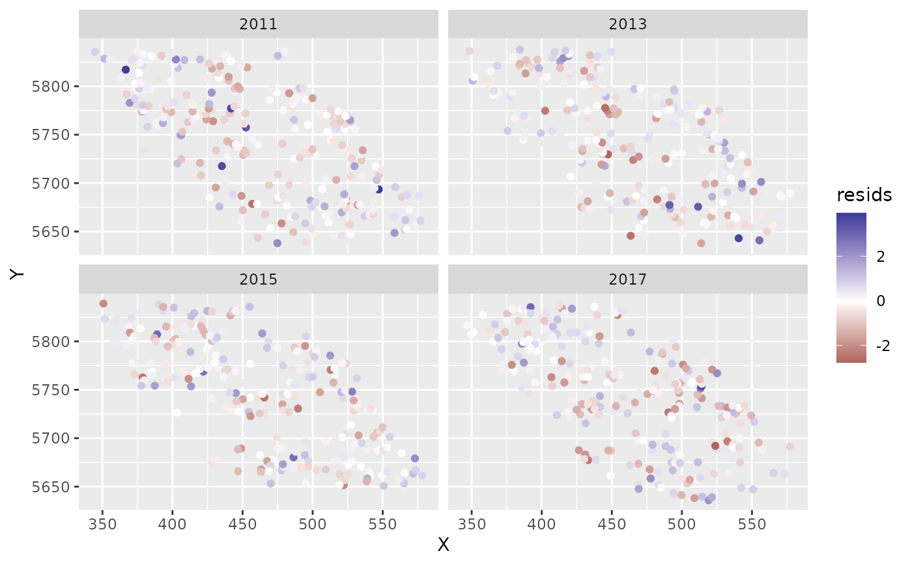
hist(predictions$resids)
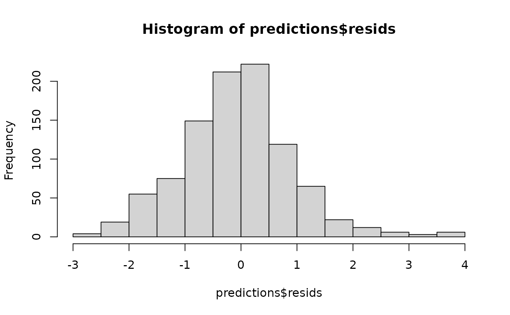
qqnorm(predictions$resids); abline(a = 0, b = 1)
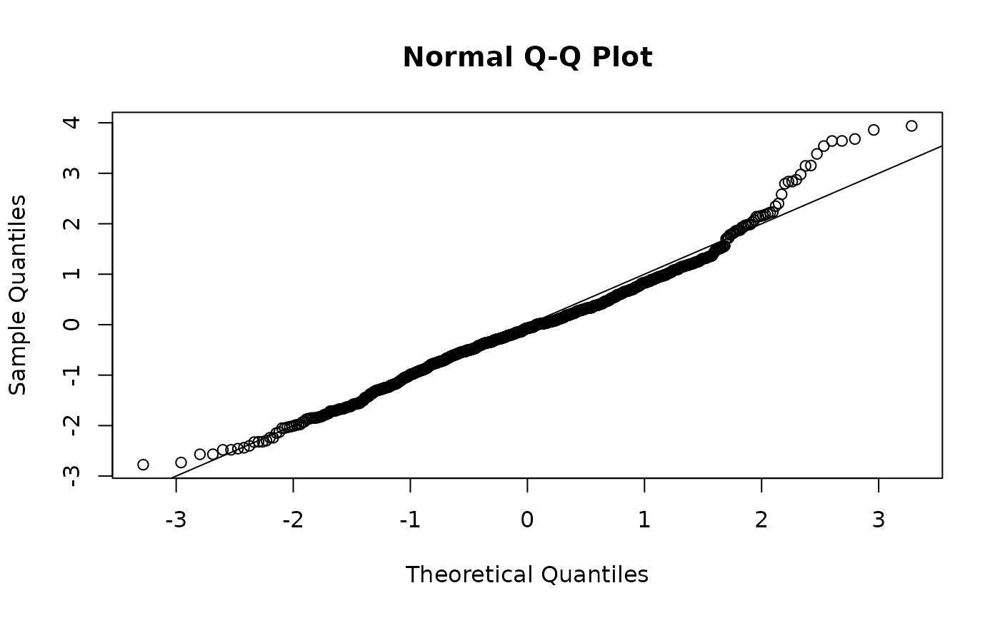
# Predictions on new data ----------------------------------------------
qcs_grid_2011 <- replicate_df(qcs_grid, "year", unique(pcod_2011$year))
predictions <- predict(m, newdata = qcs_grid_2011)
# \donttest{
# A short function for plotting predictions:
plot_map <- function(dat, column = est) {
ggplot(dat, aes(X, Y, fill = {{ column }})) +
geom_raster() +
facet_wrap(~year) +
coord_fixed()
}
plot_map(predictions, exp(est)) +
scale_fill_viridis_c(trans = "sqrt") +
ggtitle("Prediction (fixed effects + all random effects)")
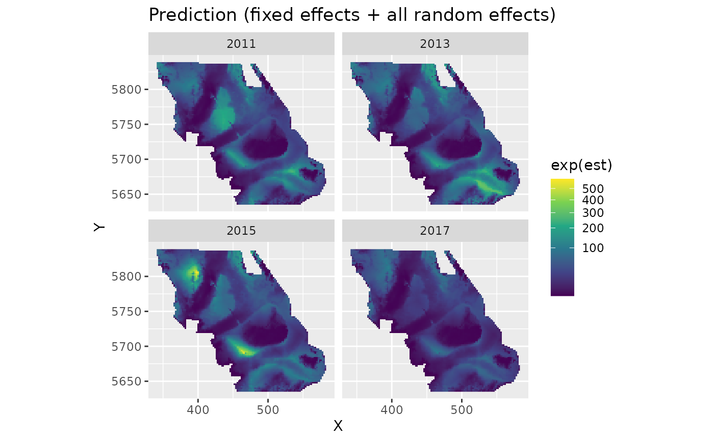
plot_map(predictions, exp(est_non_rf)) +
ggtitle("Prediction without random fields (fixed effects only here)") +
scale_fill_viridis_c(trans = "sqrt")
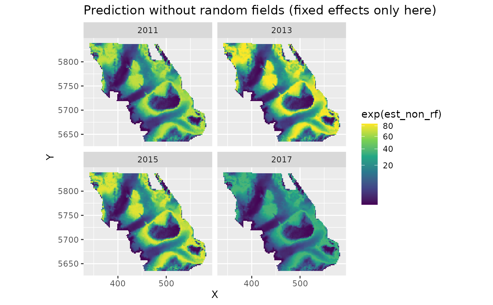
plot_map(predictions, est_rf) +
ggtitle("All random field estimates") +
scale_fill_gradient2()
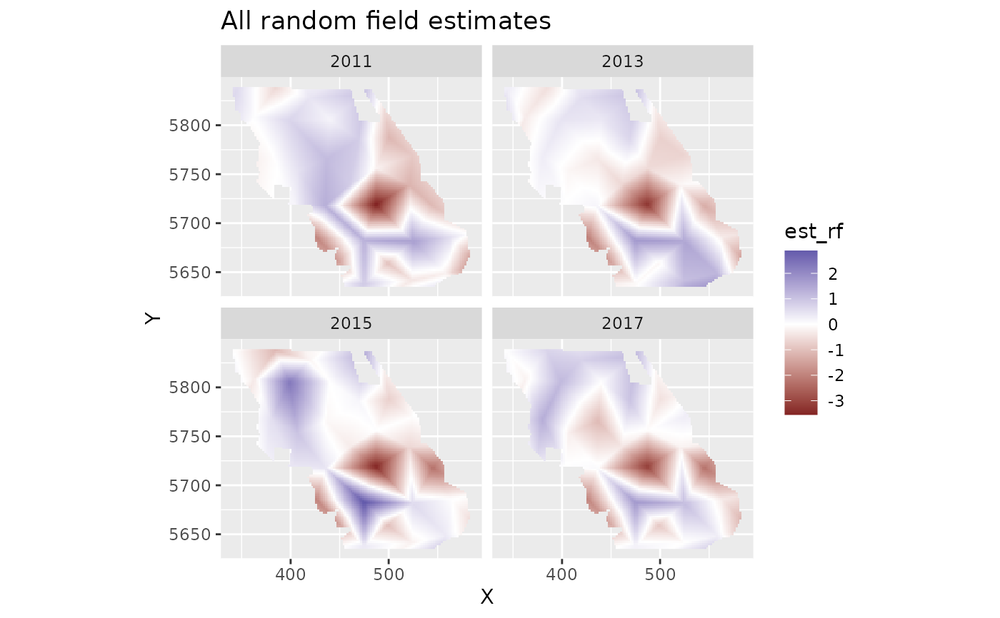
plot_map(predictions, omega_s) +
ggtitle("Spatial random effects only") +
scale_fill_gradient2()
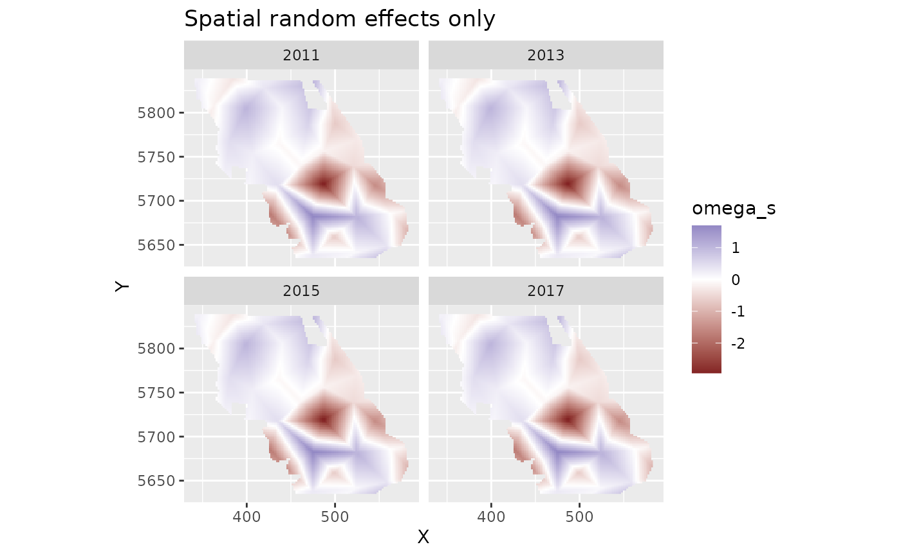
plot_map(predictions, epsilon_st) +
ggtitle("Spatiotemporal random effects only") +
scale_fill_gradient2()
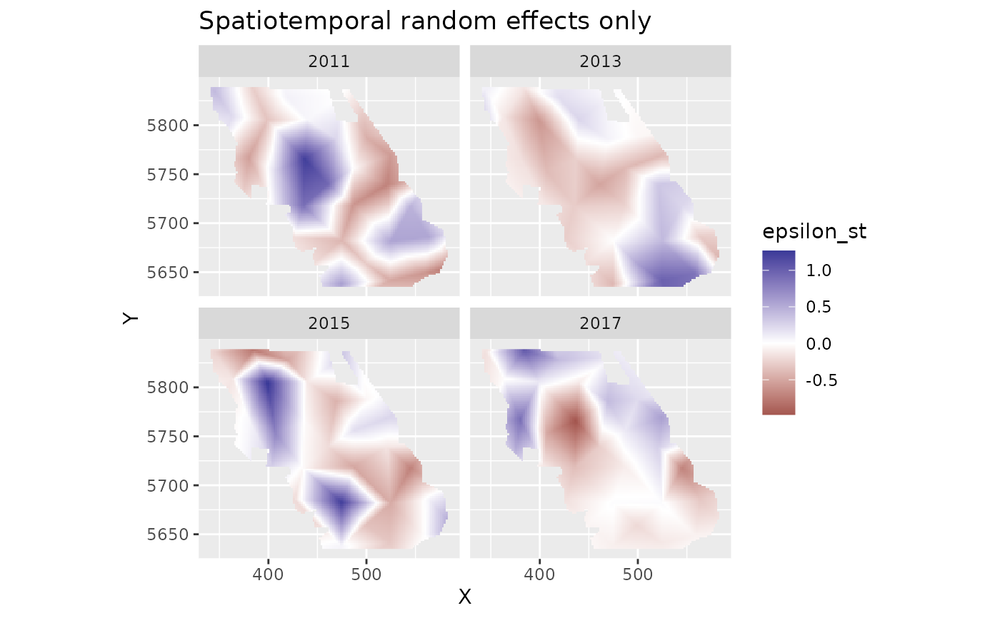
# Visualizing a marginal effect ----------------------------------------
# See the visreg package or the ggeffects::ggeffect() or
# ggeffects::ggpredict() functions
# To do this manually:
nd <- data.frame(depth_scaled =
seq(min(d$depth_scaled), max(d$depth_scaled), length.out = 100))
nd$depth_scaled2 <- nd$depth_scaled^2
# Because this is a spatiotemporal model, you'll need at least one time
# value. For these population-level predictions, if time isn't also a fixed
# effect, it doesn't matter what you pick:
nd$year <- 2011L # L: integer to match original data
p <- predict(m, newdata = nd, se_fit = TRUE, re_form = NA)
ggplot(p, aes(depth_scaled, exp(est),
ymin = exp(est - 1.96 * est_se), ymax = exp(est + 1.96 * est_se))) +
geom_line() + geom_ribbon(alpha = 0.4)
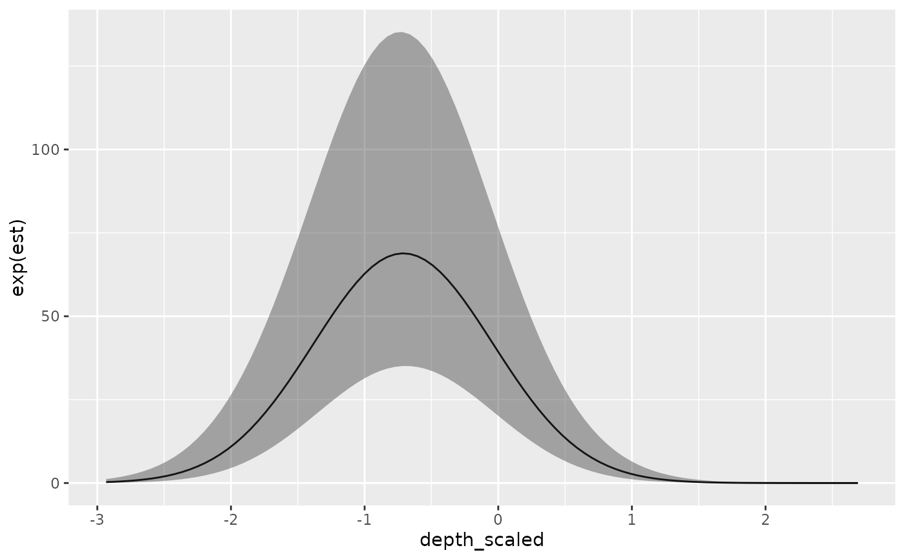
# Plotting marginal effect of a spline ---------------------------------
m_gam <- sdmTMB(
data = d, formula = density ~ 0 + as.factor(year) + s(depth_scaled, k = 5),
time = "year", mesh = mesh, family = tweedie(link = "log")
)
if (require("visreg", quietly = TRUE)) {
visreg::visreg(m_gam, "depth_scaled")
}
#> visreg 3.0 includes breaking changes. For migration details, see:
#> https://pbreheny.github.io/visreg/articles/migrating-to-3-0.html
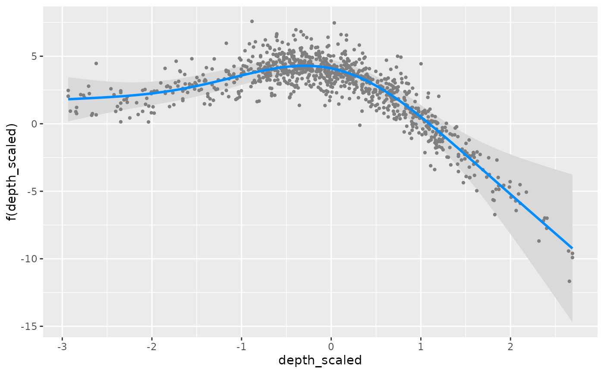
# or manually:
nd <- data.frame(depth_scaled =
seq(min(d$depth_scaled), max(d$depth_scaled), length.out = 100))
nd$year <- 2011L
p <- predict(m_gam, newdata = nd, se_fit = TRUE, re_form = NA)
ggplot(p, aes(depth_scaled, exp(est),
ymin = exp(est - 1.96 * est_se), ymax = exp(est + 1.96 * est_se))) +
geom_line() + geom_ribbon(alpha = 0.4)
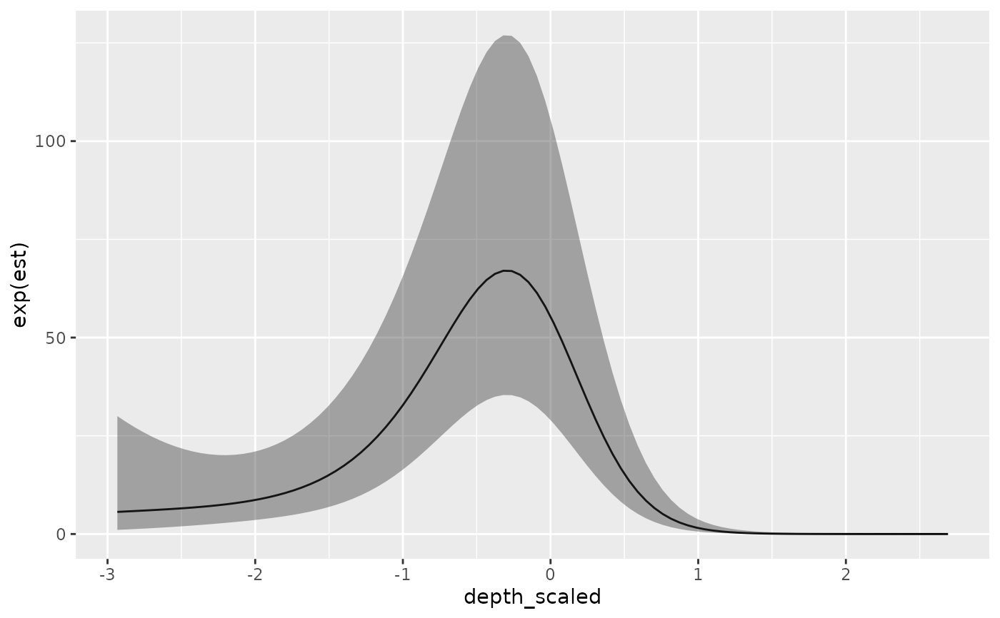
# Forecasting ----------------------------------------------------------
mesh <- make_mesh(d, c("X", "Y"), cutoff = 15)
unique(d$year)
#> [1] 2011 2013 2015 2017
m <- sdmTMB(
data = d, formula = density ~ 1,
spatiotemporal = "AR1", # using AR(1) to have something to forecast with
extra_time = 2019L, # `L` for integer to match our data
spatial = "off",
time = "year", mesh = mesh, family = tweedie(link = "log")
)
# Add a year to our grid:
grid2019 <- qcs_grid_2011[qcs_grid_2011$year == max(qcs_grid_2011$year), ]
grid2019$year <- 2019L # `L` because `year` is an integer in the data
qcsgrid_forecast <- rbind(qcs_grid_2011, grid2019)
predictions <- predict(m, newdata = qcsgrid_forecast)
plot_map(predictions, exp(est)) +
scale_fill_viridis_c(trans = "log10")
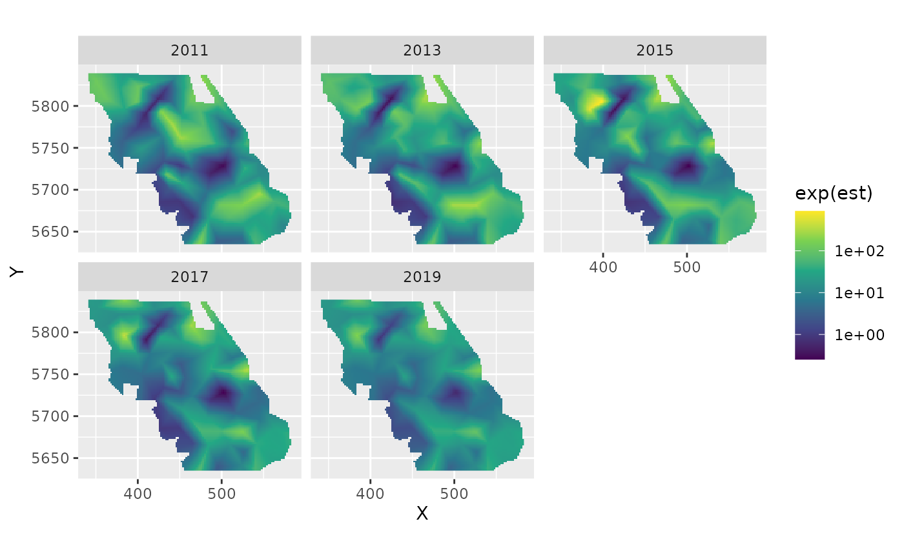
plot_map(predictions, epsilon_st) +
scale_fill_gradient2()
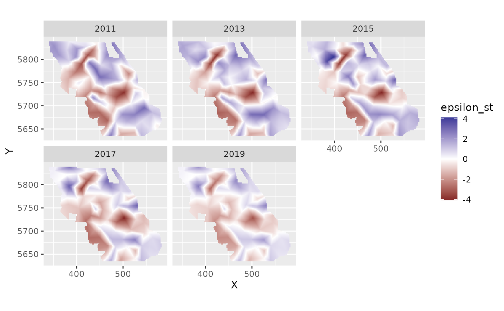
# Estimating local trends ----------------------------------------------
d <- pcod
d$year_scaled <- as.numeric(scale(d$year))
mesh <- make_mesh(pcod, c("X", "Y"), cutoff = 25)
m <- sdmTMB(data = d, formula = density ~ depth_scaled + depth_scaled2,
mesh = mesh, family = tweedie(link = "log"),
spatial_varying = ~ 0 + year_scaled, time = "year", spatiotemporal = "off")
nd <- replicate_df(qcs_grid, "year", unique(pcod$year))
nd$year_scaled <- (nd$year - mean(d$year)) / sd(d$year)
p <- predict(m, newdata = nd)
plot_map(subset(p, year == 2003), zeta_s_year_scaled) + # pick any year
ggtitle("Spatial slopes") +
scale_fill_gradient2()
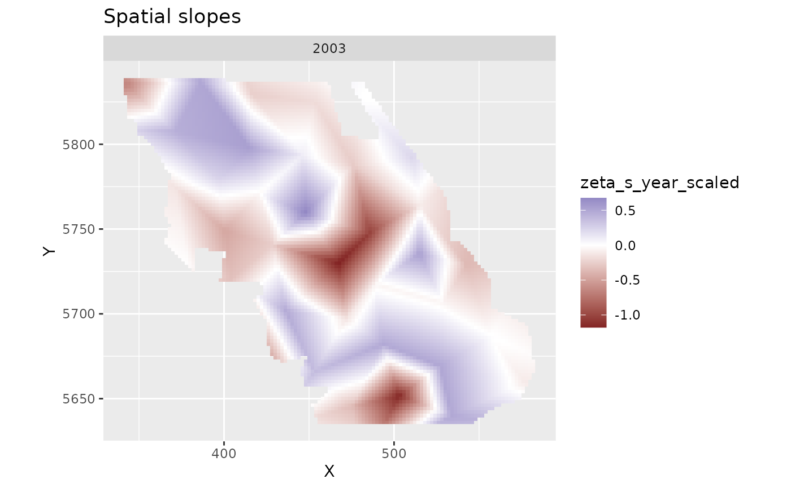
plot_map(p, est_rf) +
ggtitle("Random field estimates") +
scale_fill_gradient2()
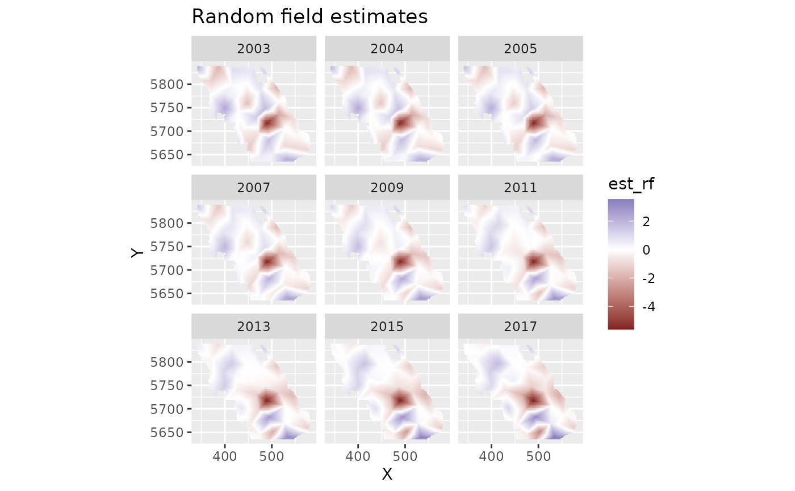
plot_map(p, exp(est_non_rf)) +
ggtitle("Prediction without random fields (fixed effects only here)") +
scale_fill_viridis_c(trans = "sqrt")
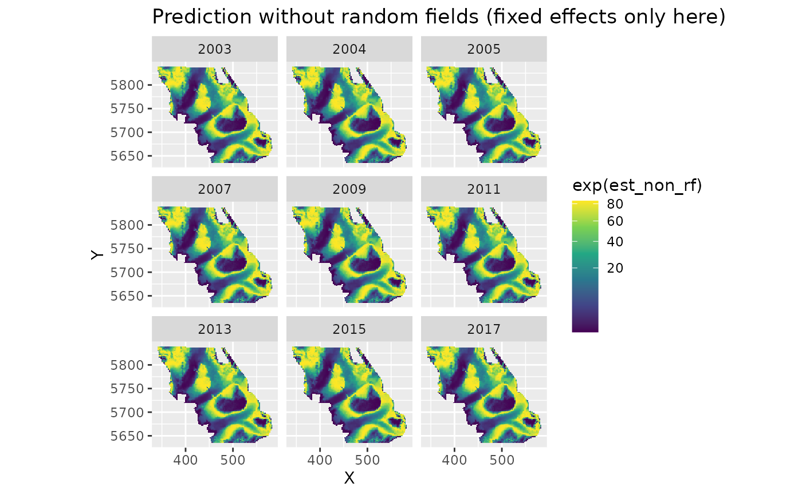
plot_map(p, exp(est)) +
ggtitle("Prediction (fixed effects + all random effects)") +
scale_fill_viridis_c(trans = "sqrt")
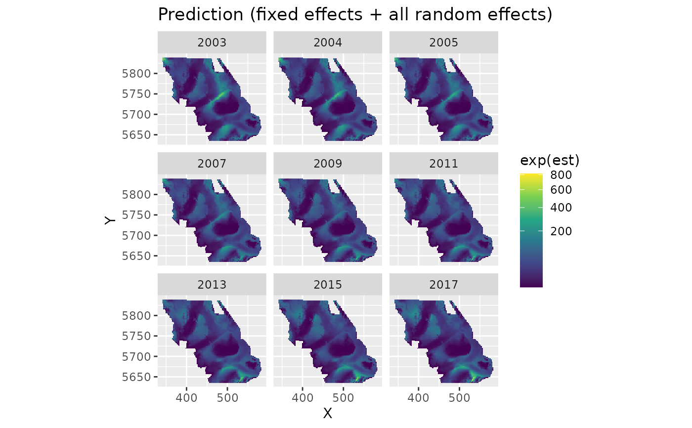
# }